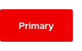
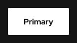
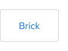
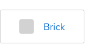

Call to action
Style
Variants
There are several call to action variants available for use depending on what you want a user to select.
Primary
Use for the primary or most important link. This variant is the highest in hierarchy and can also be used to play a video in a Modal or large container.
Primary (video)
Used only to play an important video in a Modal or large container. Do not use without a background underneath or use the Primary or Default, video variants instead.
Primary (white)
Use if the red variant conflicts with other elements or violates accessibility standards. Use on dark backgrounds, otherwise use the Secondary variant instead.
Secondary
Use for secondary or general links. This variant is lower in hierarchy than the Primary variant and can be used multiple times in the same container or layout.
Brick
Use to group links together. Only the Brick variant can stretch to fit a container or grid, otherwise the text label padding in other variants stays the same.
Brick (icon)
Use to group links with icons together. Only the Brick variant can stretch to fit a container or grid, otherwise the text label padding in other variants stays the same.
Default
Use for tertiary or the least important links. This variant is the lowest in hierarchy and can be used multiple times in the same container or layout.
Default (video)
Use to play less important videos in a Modal only. This variant is the lowest in hierarchy and can be used multiple times in the same container or layout.
Theme
Light theme

Dark theme

Responsive design
Ordering
When call to action links are grouped together, they are ordered by hierarchy from left to right. On small screens, the order changes to left to right and top to bottom if there are call to action links that fall into a second row.
Long text labels
Long text labels will wrap to two lines on small screens or when translated to certain languages. This can be avoided by writing less text or revising existing text to be shorter.
Warning
The Default call to action link arrow should not appear by itself, it should always be connected to at least one word on the same line.
Brick
The Brick variants will move around the grid to accommodate different container sizes.
Warning
Long text labels might break to two lines which adds height and disrupts the grid, therefore write no more than two or three words per link.

Spacing
Call to action links use PatternFly 4 spacers to define spacing values between elements.
Helpful tip
The same variants across both themes share the same spacing values, for example Primary, Secondary, and Default variants.
Feedback
To give feedback about anything on this page, contact us.
Foundations
To learn how to use our other components in your designs, visit the Components section.